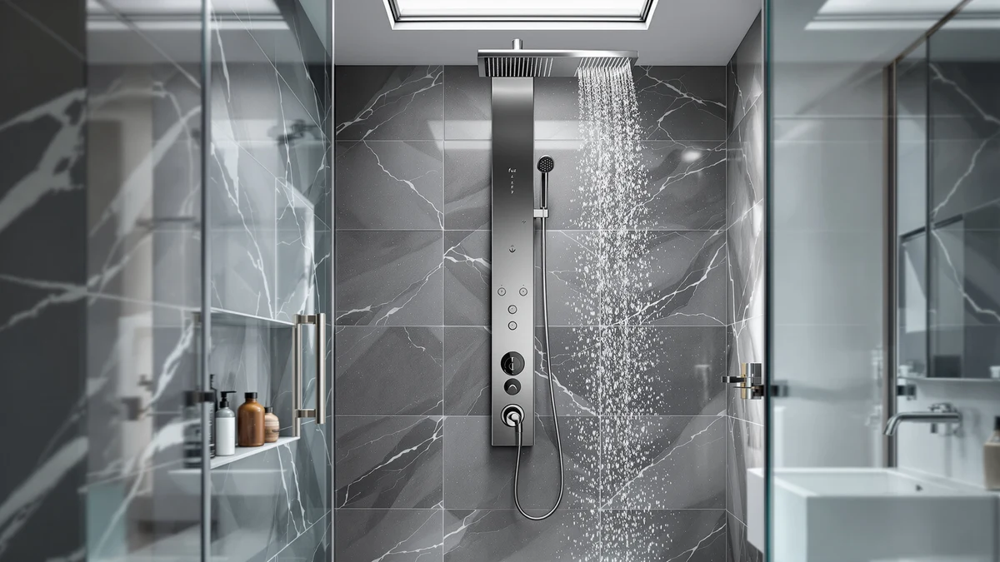

FUZ Shower Panel Tower Review (2026): Worth It?
Prices and picks verified as of October 2026. Independent, reader-supported reviews.


Quick Answer
This FUZ shower panel tower review found the FUZ Shower Panel Tower System to be a brushed nickel column with an anti-corrosion brass body, an LED display for water temperature and shower time, and six functions built into one panel for $133.99. It's a reasonable pick for anyone who wants a brushed nickel finish and a built-in temperature readout, though its three closest rivals, from GBPUSD, RTTWYYUU, and ALENARTWATER, all undercut it slightly on price.
Our pick: FUZ Shower Panel Tower System, $133.99 Check Price on Amazon
Bottom line: our top pick is the FUZ Shower Panel Tower System Brushed Nickel at $133.99.
Things to Know Before You Buy
- This FUZ shower panel tower review covers the FUZ Shower Panel Tower System, priced at $133.99 in a brushed nickel finish.
- It packs six functions onto one column: an LED display for water temperature and shower time, a rainfall and waterfall shower head, adjustable massage jets, a tub spout, and a three-mode handheld shower.
- The body is anti-corrosion brass with a brushed nickel surface treatment, a finish built to resist corrosion in a humid bathroom.
- The LED display defaults to a 74-degree Fahrenheit readout and tracks how long you've been in the shower.
- Three close alternatives, from GBPUSD, RTTWYYUU, and ALENARTWATER, are priced between $129.90 and $132.99, each a few dollars less than the FUZ panel.
This FUZ shower panel tower review looks at the FUZ Shower Panel Tower System, a brushed nickel column built for bathrooms that want a rainfall head, massage jets, and a water-temperature readout without installing three separate fixtures. Priced at $133.99, the panel uses an anti-corrosion brass body finished in brushed nickel, and its LED display shows water temperature, defaulting to 74 degrees Fahrenheit, alongside how long you've been showering. The listing describes six functions built into the column: a rainfall head, a waterfall head, adjustable massage jets, a tub spout, and a three-mode handheld shower, all switched through a single multi-outlet valve. Its closest competitors, three panels from GBPUSD, RTTWYYUU, and ALENARTWATER priced between $129.90 and $132.99, use similar stainless-steel-and-brass construction but skip the brushed nickel finish and the built-in temperature display.
The LED display is the clearest thing that sets this panel apart from its rivals. None of the three alternatives in this review include a screen that shows water temperature or elapsed shower time, so anyone who wants that feedback has one real option at this price. A brushed nickel finish does show water spots more readily than a plain stainless steel surface, though, and the FUZ panel sits a few dollars above its closest competitors rather than being the cheapest option. We compared its function list, materials, and price against the three alternatives below to see where the extra display and finish earn their cost.
Why You Should Trust Us
Ilane Tall covers home and bath fixtures for Best Shower Panels, and this FUZ shower panel tower review follows the same approach used across the site: we do not run a fake testing lab or hand out invented scores. We read the manufacturer's listed materials and function list, verify pricing against the live Amazon listing, and compare the FUZ Shower Panel Tower System against three close alternatives from GBPUSD, RTTWYYUU, and ALENARTWATER to see where the brushed nickel finish and LED display actually earn their price. We earn a commission if you buy through our links, but that never changes which panel we recommend, and we call out tradeoffs, like the higher price relative to its rivals, even when they might cost a sale.
Our Research Experience
This FUZ shower panel tower review is built the way we evaluate every shower panel on this site: by comparing materials, function count, and price against the closest alternatives rather than inventing a lab score. The FUZ Shower Panel Tower System uses an anti-corrosion brass body finished in brushed nickel, and it packs a rainfall head, a waterfall head, adjustable massage jets, a tub spout, a three-mode handheld shower, and an LED display for water temperature and shower time into one column. We checked its $133.99 price against the live Amazon listing and compared its function list and materials against three close alternatives, from GBPUSD, RTTWYYUU, and ALENARTWATER, priced between $129.90 and $132.99. Reviewers of comparable shower panel towers consistently note that the biggest daily difference between panels like these comes down to how many functions you actually use, since a display or extra jet mode only pays off if you reach for it.
Overview & Specs

FUZ Shower Panel Tower System
What we like
- LED display shows water temperature and shower time, a feature none of the three alternatives in this review include
- Anti-corrosion brass body with a brushed nickel surface treatment built to resist humidity damage
- Six functions in one column: LED display, rainfall and waterfall heads, adjustable massage jets, a tub spout, and a three-mode handheld shower
- Multi-outlet switch lets you combine functions rather than using one fixture at a time
- Installs over an existing shower valve, so it doesn't require new rough-in plumbing
Flaws but not dealbreakers
- Priced a few dollars above all three alternatives in this review, which range from $129.90 to $132.99
- Brushed nickel shows water spots more visibly than the plain stainless steel finish on the GBPUSD and RTTWYYUU panels
- The manufacturer's listing doesn't publish a flow rate or connection size, making water-pressure compatibility harder to confirm before you buy
| Material | — |
| Size | — |
As this FUZ shower panel tower review found, the LED display is the biggest reason to consider this panel over its three alternatives. It shows water temperature, defaulting to 74 degrees Fahrenheit, and tracks how long you've been in the shower, a readout none of the GBPUSD, RTTWYYUU, or ALENARTWATER panels covered later in this review include. The body is built from anti-corrosion brass with a brushed nickel surface treatment, a finish aimed at standing up to a humid bathroom without rusting. A multi-outlet switch routes water between the rainfall head, waterfall head, massage jets, tub spout, and three-mode handheld shower, so you can combine functions instead of using one fixture at a time.
Where the FUZ panel costs you something is price and upkeep. At $133.99, it runs a few dollars above all three alternatives in this review, which sit between $129.90 and $132.99. Brushed nickel also shows water spots and mineral buildup more visibly than the plain stainless steel used on the GBPUSD and RTTWYYUU panels, so it asks for more frequent wiping to keep the finish looking clean. The manufacturer's listing doesn't publish a flow rate or connection size either, so if your home has low water pressure, check with the seller before buying rather than assuming compatibility. If the temperature display and brushed nickel look matter more to you than saving a few dollars, the FUZ panel earns its price. If you'd rather save money and skip the screen, the alternatives below are worth a look first.
What We Liked
In this FUZ shower panel tower review, the LED display stood out as the clearest differentiator against the competition. None of the three alternatives covered here include a screen that reads out water temperature or shower time, so anyone specifically shopping for that feedback has one real choice at this price point. The anti-corrosion brass body backs up the brushed nickel finish, hardware built to handle a humid bathroom better than the cheaper alloys used in some budget panels. Packing six functions, the LED display, rainfall and waterfall heads, massage jets, tub spout, and three-mode handheld shower, into a single column also means you're not choosing between a rain head and a handheld wand the way you would with a simpler two-function fixture. Because it mounts over an existing shower valve, installation stays within reach of most DIY-comfortable homeowners rather than requiring a plumber for new rough-in work.
What Could Be Better
The clearest downside in this FUZ shower panel tower review is the price gap against its closest rivals. All three alternatives compared here, from GBPUSD, RTTWYYUU, and ALENARTWATER, list for less than the FUZ panel's $133.99, so you're paying a premium specifically for the temperature display and the brushed nickel finish. That finish, while attractive, also asks for more upkeep than a plain stainless steel surface, since water spots and mineral deposits show up more visibly against brushed nickel than they would on the GBPUSD or RTTWYYUU panels below. The listing also doesn't publish a flow rate, GPM, or connection size, information the RTTWYYUU listing does share through its valve and hose details, which makes water-pressure compatibility harder to confirm before you buy. None of these points are dealbreakers on their own, but buyers who want the lowest price or the most published specs should weigh them against the display and finish before choosing this panel over its competitors.
Who Is It For?
This FUZ shower panel tower review points to a specific buyer: someone who wants a brushed nickel finish and a built-in temperature readout and is willing to pay a few dollars more than the alternatives for that combination. It fits well for anyone replacing a single old shower head who wants a full six-function setup, rainfall, waterfall, massage jets, tub spout, and a three-mode handheld shower, without paying a plumber for new plumbing runs. It's also a reasonable pick for buyers who like checking water temperature before stepping in, since the LED display handles that automatically. It's a weaker fit for anyone shopping strictly on price, since all three alternatives below cost less, and for anyone who wants published flow-rate specs to confirm pressure compatibility before buying, since the FUZ listing doesn't share that information.
Alternatives to Consider
Before you commit to the FUZ panel covered in this FUZ shower panel tower review, it's worth seeing how it stacks up against three close alternatives from GBPUSD, RTTWYYUU, and ALENARTWATER, all priced between $129.90 and $132.99. Comparing all four side by side shows where the LED display and brushed nickel finish earn their price, and where a plain stainless steel body or a lower price might serve you better. None of these four panels require new rough-in plumbing, so the choice between them comes down to finish, function count, and whether a temperature display matters to you.

Editor’s Pick
GBPUSD 5-In-1Shower Panel Tower System-Brushed
At $132.99, a dollar less than the FUZ panel, the GBPUSD 5-in-1 Shower Panel Tower System trades the brushed nickel finish and LED temperature display for a gold-finished 304 stainless steel body. Its five functions cover an overhead rain shower, a waterfall shower, a handheld shower, powerful body jets, and a tub spout, the same core categories as the FUZ panel but without the screen or the three-mode handheld switch. The listing calls out the stainless steel as lightweight and corrosion resistant, and it ships with all the mounting hardware plus an instruction manual so you can connect it to existing plumbing without ordering separate parts. Because the body is plain stainless steel rather than a brushed nickel overlay, it should show water spots and mineral buildup less readily than the FUZ panel, trading some visual distinctiveness for easier upkeep. If a gold finish fits your bathroom's hardware better than brushed nickel, and you don't need a built-in temperature readout, this is the direct alternative to check first.
$132.99
Check Price on Amazon
Best Value
RTTWYYUU Shower Panel Tower System
At $129.99, the RTTWYYUU Shower Panel Tower System undercuts the FUZ panel by $4 and publishes hardware details the FUZ listing doesn't: a 304 stainless steel body paired with a brass mixing valve, a diverter valve, and an explosion-proof hose. It covers five functions, a combined rain and waterfall shower head, dual-mode body massage jets, a handheld shower on a 150cm flexible hose, and a waterfall tub spout, and that longer hose gives you more reach for washing down the shower stall than a standard-length handheld wand. Our product database lists this unit in a black finish, separate from some of the gold-toned marketing language on its Amazon listing, so it's worth double-checking the exact color variant on the product page before you buy if finish matters to you. It skips the LED display the FUZ panel includes, but the named valve hardware gives you more to verify about build quality up front. For anyone who wants documented plumbing hardware and a lower price without a screen, this is the panel to check first.
$129.99
Check Price on Amazon
Premium Choice
ALENARTWATER Shower Panel Tower System
The ALENARTWATER Shower Panel Tower System lists for $129.90, the lowest price among the four panels in this review, and it's also the only one with a corrosion rating backed by a published Salt Spray Test, built around a brass water mixer with multi-layered electroplating in a black finish. Unlike the other three panels covered here, its listing publishes exact dimensions: a column height up to 120cm (48 inches), with a shower head measuring 47cm (18 inches) long and 20cm (8 inches) wide, numbers worth checking against your own shower stall before ordering. It covers five functions, rainfall, waterfall, horizontal massage spray, a bathtub water spout, and a handheld shower, a similar spread to the GBPUSD and RTTWYYUU panels but without the FUZ panel's temperature display. If you want a documented corrosion test and exact measurements to confirm a fit before buying, and you're comfortable skipping the screen, this is the panel to check first.
$129.90
Check Price on AmazonFrequently Asked Questions
Is the FUZ Shower Panel Tower System worth it compared to the GBPUSD, RTTWYYUU, and ALENARTWATER alternatives?
This FUZ shower panel tower review found it depends on how much the LED display matters to you. At $133.99, the FUZ panel costs between $1 and $4 more than its three alternatives, and it's the only one of the four panels with a screen that shows water temperature and shower time. If a lower price or published flow-rate specs matter more to you than the display, the alternatives below are worth checking first.
How many functions does the FUZ Shower Panel Tower System have?
The manufacturer's listing describes six functions built into one column: an LED display for water temperature and shower time, a rainfall head, a waterfall head, adjustable massage jets, a tub spout, and a three-mode handheld shower, all routed through a single multi-outlet switch so you can combine functions instead of using one at a time.
Do I need a plumber to install the FUZ Shower Panel Tower System?
Most buyers can install it themselves, since it connects to an existing shower valve rather than requiring new plumbing. If your bathroom's water line placement is unusual or your current valve is damaged, hiring a plumber for the initial connection is still a reasonable precaution.
Final Verdict
Our FUZ shower panel tower review comes down to a straightforward tradeoff. The FUZ Shower Panel Tower System delivers an anti-corrosion brass body in brushed nickel, an LED display for water temperature and shower time, and six functions, rainfall, waterfall, massage jets, a tub spout, and a three-mode handheld shower, for $133.99. It's the right pick for bathrooms that want a brushed nickel finish and a built-in temperature readout, and for buyers willing to pay a few dollars more than its rivals for that combination. Choose one of the GBPUSD, RTTWYYUU, or ALENARTWATER alternatives instead if a lower price, published flow-rate specs, or a plain stainless steel finish matters more to you than the display. For most people set on a brushed nickel shower panel tower with a temperature readout built in, FUZMONOERE's panel remains the more sensible choice.